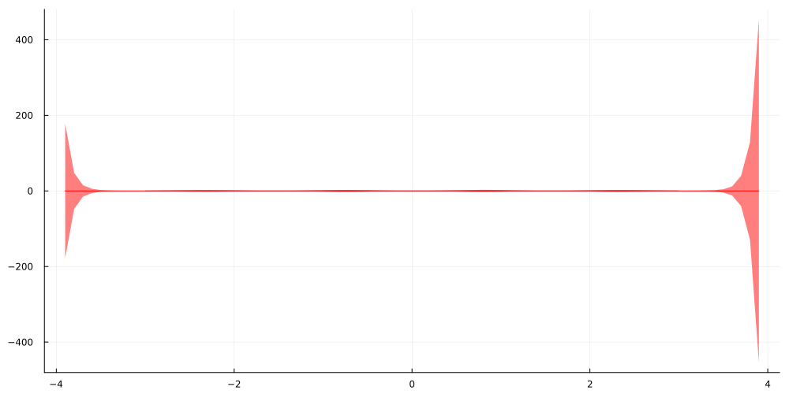
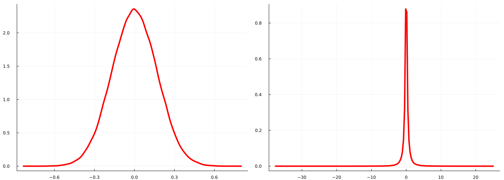

using Flux, Zygote, Distributions, DistributionsAD, FastGaussQuadrature, Plots, StatsPlots, KernelFunctions, LinearAlgebra, RandomIntroduction
A common phenomenon when working on continuous regression problems is the non-constant residual variance, also known as heteroscedasticity. While heteroscedasticity is often seen in Statistics and Econometrics, it doesn’t seem to receive as much attention in mainstream Machine Learning and Data Science literature.
Although predicting the mean via MSE-minimisation is often sufficient and more pragmatic, a proper treatment of the variance can be helpful at times. See for example this past blog post of mine for more thoughts on this topic.
In this article I want to show an example of how we can use Gaussian Processes to model heteroscedastic data. Since explaining every theoretical aspect would go far beyond the scope of this post, I recommend reading the references if you are interested in such models. First, let us start with a brief problem definition.
Problem definition
At the heart of non-constant variance models lies the assumption of some functional relation between the input data and the variance of the target variable. Presuming also a Gaussian target variable, we can construct the following probabilistic setup:
\[y\sim\mathcal{N}\left(m(X),\sigma^2(X)\right)\]
Put plainly, given some input data, the corresponding target should be Gaussian with mean and variance being arbitrary functions of our inputs. Since our focus today is on the variance, let us simplify things a little with a zero-mean function, i.e.
\[y\sim\mathcal{N}\left(0,\sigma^2(X)\right)\]
Our task is now to find a suitable function for sigma squared.
If, ex-ante, we don’t know much about our target function, whatever model we come up with should account for our uncertainty about the actual functional form of sigma squared. This is also known as epistemic uncertainty and one of the main considerations in Bayesian Machine Learning. In simple terms, we now don’t expect that a single model would best describe our target function anymore.
Instead, a — possibly infinitely large — set of models is considered and our goal is to place a probability distribution (a.k.a. posterior distribution) on this set such that those models that best describe the data (a.k.a. likelihood) given the assumptions we made (a.k.a. prior distributions) are the most likely ones.
This is usually done in weight space by defining our set of models in an implicit manner via the sets of parameters that describe the models’ behaviour — probably the most famous example in Machine Learning are Bayesian Neural Networks. Another, more abstract approach is to directly work in function space, i.e. we now explicitly look for the most likely functions without requiring parameters to describe them in the first place.
Since we are working in the Bayesian domain, this also means that prior and posterior distributions aren’t put over parameters anymore but also directly over functions. One of the most iconic frameworks for such modelling is Gaussian Process (GP) regression.
If this is a new concept to you and sounds confusing, I recommend to not worry about the underlying assumptions for now and just look at the formulas. One of the — by number of citations — most popular books on Gaussian Process models, Gaussian Processes for Machine Learning (GPML) provides a very clear introduction to the theoretical setup and is completely open source. To prevent this article from overbloating, I will not go too much into details and rather suggest you study the topics you don’t understand yourself.
The model
Our goal will be to model the varying variance of the target variable through a GP, which looks as follows:
\[y\sim \mathcal{N}(0,f^{exp}(X))\]
\[f(\cdot)\sim \mathcal{GP}(0,k(\cdot,\cdot)+\nu\cdot\delta_{ij}),\,f^{exp}(X)=exp(f(X))\]
This implies that the logarithm of our variance function is a GP — we need to squash the raw GP through an exponential to ensure that the variance will always be greater than zero. Any other function that maps the real line to the positive reals will do here but the exponential arguably the most popular one.
The above also implies that the GP is actually a latent component of our model that we only observe indirectly from the data we collect. Finally, we presumed additional noise on the GP kernel via the delta summand which makes the model more stable in practice.
We can then derive the posterior distribution derived via Bayes’ theorem as follows:
\[p(f|X,y)=\frac{\mathcal{N}(y|0,f^{exp}(X))\cdot\mathcal{GP}(f|0,k(\cdot,\cdot)+\nu^2\cdot\delta_{ij}))}{p(y|X)}\]
While it is possible to derive the left-hand side in closed form for some basic GP models, we cannot do so in our case. Instead we will apply Laplace Approximation and approximate it through a synthetic multivariate Normal
\[p(f|X,y)\approx \mathcal{N}(f|\hat{f},A)\]
The exact steps for Laplace Approximation are explained in Chapter 3 of the GPML book for a binary classification model and we only need to adjust the approach to our model.
In summary, the mean parameter of our approximation should match the mode of the posterior, while its covariance matrix is the negative inverse of the Hessian matrix of our data log-likelihood function. We have:
\[\hat{f}=argmax_f \log\mathcal{N}(y|0,f^{exp}(X))+\log\mathcal{GP}(f|0,k(\cdot,\cdot)+\nu^2\cdot\delta_{ij}))\]
\[A^{-1}=-\nabla^2 \log \mathcal{N}(y|0,f^{exp}(X))\]
The first equation is derived from the fact that the denominator of the posterior formula does not depend on our target and by monotonicity of the logarithm function. The latter equation is derived from a second-order Taylor-expansion around the maximum of the posterior function.
To find the approximate mean and optimal kernel hyper-parameters for some example data later on, we will plug in the whole loss into an automatic differentiation package and let the computer do the rest. For the covariance matrix of our approximation, we need to actually calculate the Hessian matrix.
A common simplification for GP models is the assumption of independent observations of the target variable given a realisation of the latent GP:
\[p(y|f)=\prod_{i=1}^N p(y_i|f)\]
This allows us to simplify the Hessian matrix to be zero everywhere, except for its diagonal which is the second-order derivative of the log-likelihood function with respect to the GP:
\[H_{ii}=\frac{\partial^2}{\partial f_i^2}\log p(y_i|f_i)\]
The right-hand side can be derived by differentiating the standard Gaussian log-likelihood twice with respect to the variance while accounting for our exponential transform:
\[\begin{gathered} \frac{\partial^2}{\partial f_i^2}\log p(y_i|f_i)\\ =\frac{\partial}{\partial f_i} \frac{\partial}{\partial f_i}\log p(y_i|f_i)\\ =\frac{\partial}{\partial f_i} \frac{\partial}{\partial f_i}\left( -0.5 \log (2\pi)-0.5f_i - 0.5\frac{y_i^2}{exp(f_i)}\right)\\ =\frac{\partial}{\partial f_i} \left(-0.5 + 0.5\frac{y_i^2}{exp(f_i)}\right)\\ =- 0.5\frac{y_i^2}{exp(f_i)} \end{gathered} \]
Which yields
\[H_{ii}=- 0.5\frac{y_i^2}{exp(f_i)}\]
and
\[A_{ii}=2\cdot\frac{exp(f_i)}{y_i^2}\]
Finally, we need to derive the so-called posterior predictive distribution i.e. our predictions for new, unobserved inputs:
\[p(y^*|X^*,X,Y)\]
I will only state the results from GPML, chapter 3 for our setup, without the preceding derivations. First, we need to calculate the posterior predictive distribution for the latent GP which, using our approximation from above, is yet another GP:
\[p(f^*|X^*,X,Y)=\mathcal{GP}(f^*|\mu^*,S^*)\]
\[\mu^*=K_{*N}K_{NN}^{-1}\hat{f}\]
\[S^*=K_{**}-K_{*N}(K_{NN}+A)^{-1}K_{*N}^T\]
where the K-variables denote the kernel covariance gram-matrices for training and evaluation dataset and the kernel cross-covariance matrix between training and evaluation datasets. If you are familiar with GP-regression, you can see that the posterior mean and covariance terms are almost the same as in the standard case, except that we accounted for the mean and covariance of our Laplace approximation.
Finally, we can derive the posterior predictive distribution for new data by marginalising out the GP posterior predictive function:
\[p(y^*|X^*,X,Y)=\int p(y^*|f^*)p(f^*|\mu^*,S^*)df^* = \int\mathcal{N}(y^*|0,f^*)\mathcal{GP}(f^*|\mu^*,S^*)df^*\]
This integral is also intractable — luckily, since we only want to evaluate the posterior predictive distribution, we can sample from the target distribution via Monte Carlo sampling.
To demonstrate this approach in practice, I implemented a brief example in Julia.
A quick example using Julia
The data is a simple, 1D toy-example with 200 observations and generating distributions
\[y\sim \mathcal{N}(0,sin^2(2 *X)),\quad X\sim\mathcal{U}(-3,3)\]
i.e. the input variable is sampled uniformly between -3 and 3 and the target is drawn from a zero-mean Gaussian with periodic variance:
Random.seed!(987)
sample_size = 200
X = rand(1,sample_size).*6 .- 3
Xline = Matrix(transpose(collect(-3.9:0.1:3.9)[:,:])) #small, interpolated 1D grid for evalutaion
Xline_train = Xline[(Xline.>=-3) .& (Xline.<=3)]
y = randn(1,sample_size).*sin.(2 .*X)
plot(Xline_train,zeros(length(Xline_train));ribbon=(2 .* sin.(2 .*Xline_train)))
scatter!(X[:],y[:],legend=:none, fmt = :png,size=(1000,500),color=:red)
To fully define the GP, we also need to specify the kernel function — here I chose a standard Square-Exponential (SE) kernel plus the already mentioned additive noise term, i.e.
\[k(x,x') = s\cdot\exp\left(\frac{(x-x')^2}{l}\right) + \nu\delta_{xx'}\]
where all three hyper-parameters need to be positive. We now have all the formulas we need to define the necessary functions and structs (Julia’s counterpart to classes in object oriented languages)
mutable struct SEKernel <: KernelFunctions.Kernel
l_log
s_log
end
Flux.@functor SEKernel
SEKernel() = SEKernel(ones(1,1),ones(1,1))
#using KernelFunctions.jl for the primitives, we specify the raw SE-kernel here - the noise term will be added in the full model
KernelFunctions.kernelmatrix(m::SEKernel,x::Matrix,y::Matrix) = exp.(m.s_log)[1,1].*exp.(
-sum(exp.(m.l_log).*(Flux.unsqueeze(x,3).-Flux.unsqueeze(y,2)).^2,dims=1)[1,:,:]
)
KernelFunctions.kernelmatrix(m::SEKernel,x::Matrix) = KernelFunctions.kernelmatrix(m,x,x);mutable struct HeteroscedasticityGPModel
kern
f_hat
nu_log
end
Flux.@functor HeteroscedasticityGPModel
# 'n' specifies the dimensionality or our Laplace Approximation - needs to be equal to the size of the training dataset
HeteroscedasticityGPModel(n) = HeteroscedasticityGPModel(SEKernel(),zeros(1,n),ones(1,1))
# this is the log-likelihood term we need for calculating the optimal mean parameter of the Laplace Approximation - Zygote.jl and Flux.jl will be used for Autodiff
function loss(m::HeteroscedasticityGPModel,y,X)
_,N = size(m.f_hat)
K= kernelmatrix(m.kern,X)
likelihood_term = sum(llnormal.(y[:],zeros(N),m.f_hat[:]))
prior_term = Distributions.logpdf(MvNormal(zeros(N),K.+Diagonal(ones(N).*exp.(m.nu_log)[1,1])),m.f_hat[:])
return -likelihood_term - prior_term #negative since Flux.Optimise minimizes the target but we want to maximize it
end;#Manual derivation of log-likelihood and hessian diagonal of the log-likelihood with respect to f; the gradient is also included
llnormal(x,m,s) = -0.5 * log(2. * 3.14 * exp(s)) - 1 ./(2 .*exp(s))*(x-m)^2.
llnormgrad(x,m,s) = -0.5 + 0.5*1/exp(s)*(x-m)^2
llnormhess(x,m,s) = - 0.5/exp(s)*(x-m)^2
#finite differences test to ensure that the formulas for the gradient and hessian diagonal are correct
eps = 1e-10
@assert abs((llnormal(2,1,1)-llnormal(2,1,1-eps))/eps - llnormgrad(2,1,1)) < 1e-6
@assert abs((llnormgrad(2,1,1)-llnormgrad(2,1,1-eps))/eps - llnormhess(2,1,1)) <1e-6;model = HeteroscedasticityGPModel(sample_size)
params = Flux.params(model);#test that the Zygote.jl gradients are actually working
Zygote.gradient(()->loss(model,y,X),params);opt = ADAM(0.01)
for i in 1:2500
grads = Zygote.gradient(()->loss(model,y,X),params)
Flux.Optimise.update!(opt,params,grads)
if i%250==0
println(loss(model,y,X))
end
end;248.54495027449855
11.759623403151409
-221.67423883166694
-451.1514391636018
-659.5369049784196
-795.0349981998211
-752.3599410064332
-937.6992763973955
-922.2646364618785
-981.90093613224#calculate the posterior distribution of f evaluated at X_star
M,N = size(model.f_hat)
K= kernelmatrix(model.kern,hcat(X,Xline)).+Diagonal(exp(model.nu_log[1,1]).*ones(N+size(Xline)[2]))
A = inv(-Diagonal(llnormhess.(y[:],zeros(N),model.f_hat[:])).+Diagonal(ones(sample_size).*1e-6))
#kernel covariance matrices as
K_NN = K[1:sample_size,1:sample_size]
K_star_star = K[sample_size+1:end,sample_size+1:end]
K_star_N = K[sample_size+1:end,1:sample_size]
#posterior mean and covariance of the GP evaluated at `Xline`
mu_star = model.f_hat*inv(K_NN.+Diagonal(ones(sample_size).*1e-6))*transpose(K_star_N)
S_star = K_star_star.- K_star_N*inv(K_NN.+inv(K_NN.+A .+ Diagonal(ones(sample_size).*1e-6)))*transpose(K_star_N)
#posterior probability distribution of f, evaluated at X_star
p_f_star = MvNormal(mu_star[:],Symmetric(S_star.+Diagonal(ones(size(Xline)[2]).*1e-6)));The resulting functional posterior predictive distribution after optimising the above kernel hyper-parameters and the Laplace Approximation looks as follows:
# Monte Carlo sampling from the posterior predictive distribution for y_star
mc_samples = [randn(size(Xline)[2]).*sqrt.((exp.(rand(p_f_star)))) for _ in 1:100000]
mc_sample_matrix = hcat(mc_samples...)
#posterior predictive mean is zero by our model definition
posterior_predictive_mean = zeros(size(Xline)[2])[:]
posterior_predictive_std = std(mc_sample_matrix,dims=2)[:]
#plot(Xline[:],posterior_predictive_mean,legend=:none,ribbon=(posterior_predictive_mean.-ci_90percent_lower, ci_90percent_upper.-posterior_predictive_mean), fmt = :png,size=(1000,500),
#color=:green)
plot(Xline_train,zeros(length(Xline_train));ribbon=(2 .* sin.(2 .*Xline_train)))
plot!(Xline[:],posterior_predictive_mean,legend=:none,ribbon=2 * posterior_predictive_std, fmt = :png,size=(1000,500), color=:red)
#scatter!(X[:],y[:],color=:red)
To see what happens for data that lies outside of the range of our training data, the evaluation was performed on the interval. As you can see, the posterior predictive variance shows a sharp increase the further we look into the unknown.
This is exactly what should happen under the influence of epistemic uncertainty. To some extent, a model can learn which functions describe the target function in close distance to the training data. On the other hand, the set of candidate functions that might equally well describe data outside our observations grows larger the farther we move away from the training data.
Put simple, the less similar our test data is to the training data, the more uncertain we should be about our predictions. This uncertainty is expressed by the variance of the posterior predictive distribution — larger variance implies larger uncertainty.
We can also see this quite well by comparing the posterior predictive density for an X that lies in the center of observed data vs. the posterior predictive density for an X rather outside that range:
plot(density(mc_sample_matrix[findall(Xline[:].==0.)[1],:],legend=:none,color=:red,lw=4),density(mc_sample_matrix[findall(Xline[:].==-3.5)[1],:],legend=:none,color=:red,lw=4),
size=(1400,500),fmt=:png)
It is quite obvious that the posterior predictive density at -3.5 implies a much broader range of potential values for y than the posterior predictive density at zero. Being able to quantify such uncertainty is one of the most intriguing features of Bayesian Machine Learning and I can highly recommend to dive deeper into this vast topic.
Going further
It is quite obvious that the example we used was only a toy dataset and doesn’t yet prove anything about the real-world capabilities of the proposed model. If you are interested, feel free to use and modify the code and try the model on something more realistic.
One potential application for such models would be financial time-series data which are quite well known to exhibit highly variable variance in periods of crisis. While GARCH models are often consider state-of-the-art here, a GP model might be an interesting alternative. Another possible improvement for general continuous regression problems would be to also model the data mean as a GP.
A final word about scalability: Plain GP models like the one we discussed here are quite infamous for being infeasible for larger datasets. Luckily, many smart people have developed methods to solve these issues, at least to some extent. In case you are interested in such approaches, you can find an overview in these slides from the Gaussian Process Summer School 2019.
And that’s it for today. Thanks for reading this far and let me know in the comments if you have any questions or found any errors in this post
References
[1] RASMUSSEN, Carl Edward. Gaussian processes in machine learning. In: Summer school on machine learning. Springer, Berlin, Heidelberg, 2003.
[2] Bollerslev, Tim. Generalized autoregressive conditional heteroskedasticity. Journal of econometrics, 1986, 31. 3, p. 307-327.